Family Computer (Famicom)
La Family Computer, conocida como Famicom o
ファミコン, fue lanzada en Japón el 15 de julio
de 1983. Es la versión japonesa de la familia de
consolas de 8 bits que posteriormente se
comercializó internacionalmente como NES.
Su diseño original, de color blanco y rojo,
incorporaba dos mandos conectados a la consola.
Utilizaba cartuchos intercambiables y contribuyó
a popularizar los videojuegos domésticos en Japón.
Recibió títulos como Super Mario Bros., The Legend
of Zelda y Metroid.
Ventas en Japón: aproximadamente 19,35 millones
de unidades.
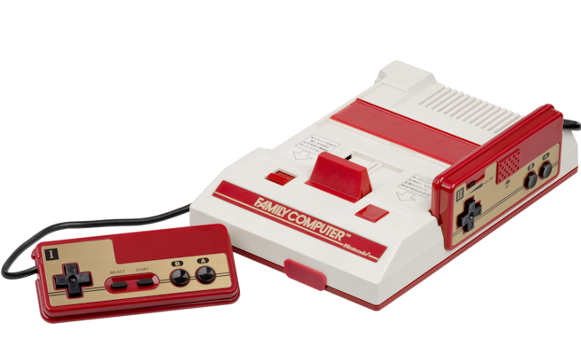
Nintendo Entertainment System (NES)
La Nintendo Entertainment System, conocida
como NES, es la versión occidental de la familia
de consolas de 8 bits iniciada por la Famicom.
Se lanzó en Norteamérica en 1985 y llegó a Europa
en 1986.
A diferencia del diseño japonés, la NES original
norteamericana utilizaba una carcasa horizontal
de color gris y un sistema de inserción frontal
de cartuchos. Su catálogo ayudó a consolidar
franquicias como Super Mario Bros., The Legend
of Zelda, Metroid y Mega Man.
La Famicom y la NES pertenecen a la misma familia,
pero sus cartuchos y diseños regionales no son
idénticos. Las cifras de ventas publicadas para
la NES suelen rondar los 61,9 millones de unidades
en todo el mundo.
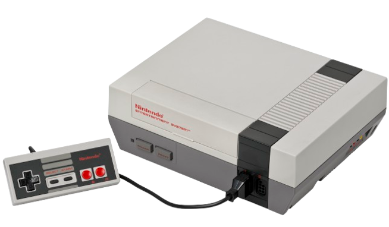
Super Famicom
La Super Famicom (スーパーファミコン) es la versión
japonesa de la consola de 16 bits que Nintendo
comercializó en otros territorios como Super
Nintendo Entertainment System. Salió en Japón
el 21 de noviembre de 1990.
Su diseño japonés presenta una carcasa redondeada
de color blanco y gris y mandos con botones de
distintos colores. Supuso un salto importante
respecto a la Famicom gracias a sus gráficos,
sonido y posibilidades técnicas. Entre sus juegos
más conocidos están Super Mario World, The Legend
of Zelda: A Link to the Past y Super Metroid.
La Super Famicom y las versiones occidentales
pertenecen a la misma familia de 16 bits, aunque
cambian la carcasa, los cartuchos y algunos
detalles regionales.
Ventas en Japón: aproximadamente 17,17 millones
de unidades.
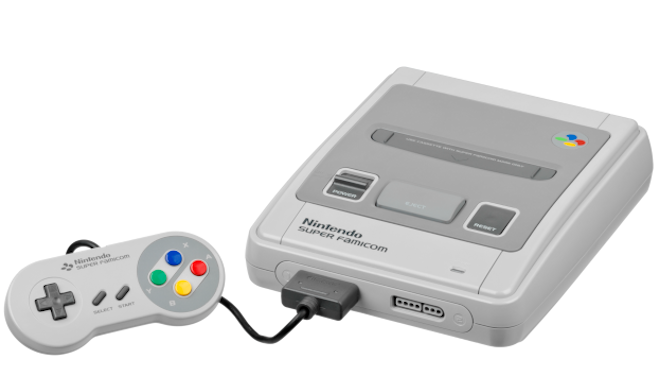
Super Nintendo Entertainment System (SNES)
La Super Nintendo Entertainment System, conocida
como SNES en Norteamérica, es la versión occidental
de la consola de 16 bits de Nintendo. Se lanzó en
Estados Unidos el 23 de agosto de 1991 y compitió
principalmente con la Sega Genesis, conocida en
Europa como Mega Drive.
El modelo norteamericano tiene una carcasa
de líneas angulosas y botones de mando de
distintos colores. Su hardware permitió juegos
con escenarios detallados, efectos gráficos
avanzados y una banda sonora más elaborada que
la generación anterior. Entre sus títulos más
destacados están Super Mario World, Super Metroid,
Donkey Kong Country y The Legend of Zelda:
A Link to the Past.
La SNES norteamericana es una variante regional
de la misma familia que la Super Famicom japonesa
y la Super Nintendo europea. Su diseño y sus
cartuchos presentan diferencias regionales.
La familia Super Nintendo vendió más de
49 millones de unidades en todo el mundo,
según las cifras históricas más difundidas.
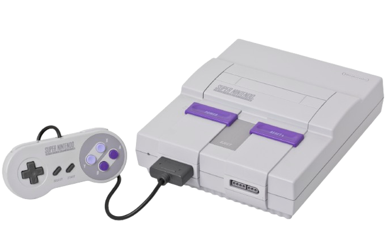
Super Nintendo europea (PAL)
La Super Nintendo europea es la versión PAL de
la consola de 16 bits de Nintendo. Llegó a Europa
en junio de 1992, después de los lanzamientos
japonés de 1990 y norteamericano de 1991.
Su carcasa redondeada, de color gris claro,
se diferencia del diseño más anguloso de la SNES
norteamericana. También utilizaba cartuchos con
una forma distinta a los de la versión de Estados
Unidos. Estas diferencias regionales son
importantes para identificar correctamente
cada modelo físico.
Aunque en Europa se conoció habitualmente como
Super Nintendo, su nombre oficial completo
también fue Super Nintendo Entertainment System.
No se trata de una consola de otra generación,
sino de la variante europea de la misma familia
de 16 bits que la Super Famicom y la SNES
norteamericana.
La familia Super Nintendo vendió más de
49 millones de unidades en todo el mundo.
Esta cifra corresponde a la familia completa,
no exclusivamente al modelo europeo.
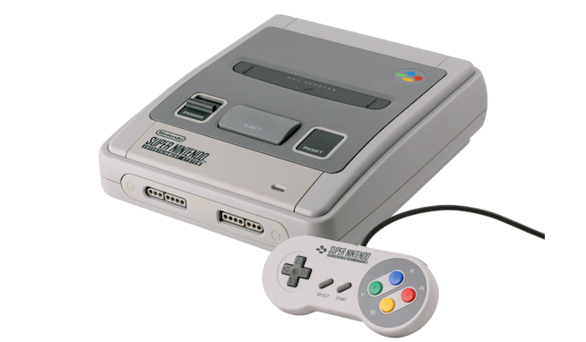
Nintendo 64
La Nintendo 64 fue lanzada en Japón en junio
de 1996 y posteriormente llegó a otros mercados.
Es una consola de quinta generación que destacó
por sus gráficos tridimensionales y su mando
con palanca analógica.
A diferencia de PlayStation y Sega Saturn,
continuó utilizando cartuchos como soporte
principal de sus juegos. Esta elección ofrecía
tiempos de carga reducidos, aunque limitaba
el espacio disponible frente al CD-ROM.
Entre sus juegos más recordados están Super
Mario 64, The Legend of Zelda: Ocarina of Time
y GoldenEye 007.
Ventas mundiales: aproximadamente 32,93 millones
de unidades.
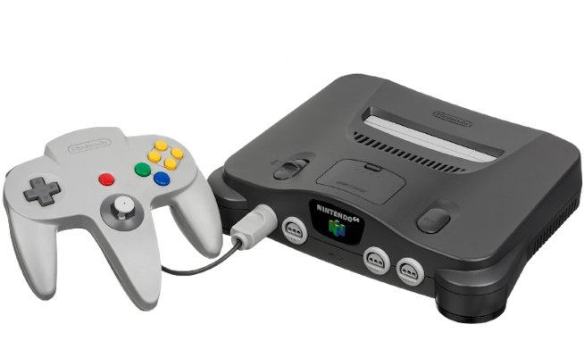
Nintendo GameCube
Nintendo GameCube se lanzó en Japón en septiembre
de 2001 y llegó a otros mercados ese mismo año.
Fue la sucesora de Nintendo 64 y utilizó discos
ópticos de formato propio en lugar de cartuchos.
Su diseño compacto en forma de cubo y su asa
integrada la diferenciaron de otras consolas.
Contaba con un procesador basado en PowerPC
y gráficos desarrollados por ATI. Su catálogo
incluyó Super Mario Sunshine, Metroid Prime,
Luigi's Mansion y The Legend of Zelda: The
Wind Waker.
Ventas mundiales: aproximadamente 21,74 millones
de unidades.
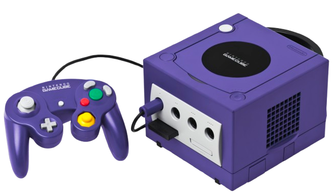
Nintendo Wii
Wii se lanzó en 2006 y destacó por su mando
inalámbrico Wii Remote, capaz de detectar
movimientos y orientación. Nintendo apostó por
una experiencia accesible para públicos muy
diversos, más allá de los jugadores habituales.
Juegos como Wii Sports, Mario Kart Wii y
Super Mario Galaxy ayudaron a convertirla
en uno de los mayores éxitos comerciales
de la compañía.
Ventas mundiales: aproximadamente 101,63 millones
de unidades.
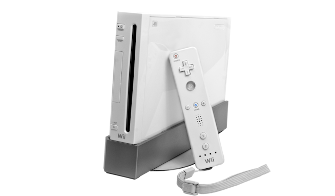
Nintendo Wii U
Wii U se lanzó en 2012 y fue la primera consola
de sobremesa de Nintendo compatible con gráficos
de alta definición. Su principal novedad era
el Wii U GamePad, un mando con pantalla táctil
que permitía mostrar información adicional
o continuar algunas partidas sin utilizar
el televisor.
Pese a ideas interesantes y juegos destacados,
como Mario Kart 8 y Super Mario 3D World,
tuvo unas ventas muy inferiores a las de Wii.
Ventas mundiales: aproximadamente 13,56 millones
de unidades.
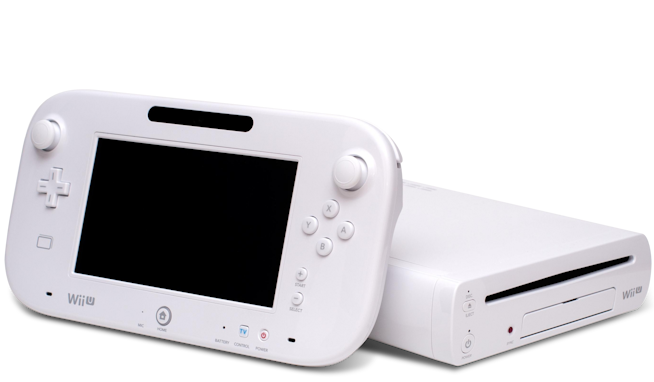
Nintendo Switch
Nintendo Switch se lanzó mundialmente el
3 de marzo de 2017. Su diseño híbrido permite
jugar tanto en un televisor, mediante su base,
como en modo portátil. Sus mandos Joy-Con
desmontables permiten también jugar en modo
sobremesa sin accesorios adicionales.
Su versatilidad y su amplio catálogo de juegos,
entre ellos The Legend of Zelda: Breath of the
Wild, Super Mario Odyssey y Animal Crossing:
New Horizons, la convirtieron en una de las
consolas de mayor éxito de Nintendo.
Ventas mundiales: más de 150 millones de unidades
a lo largo de su ciclo comercial, según la fecha
de actualización de las cifras oficiales.
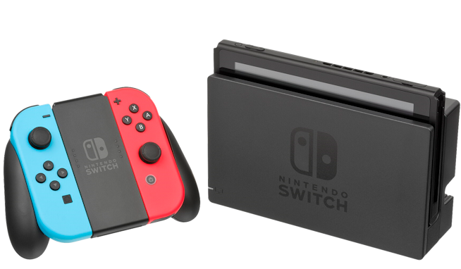
Nintendo Switch 2
Nintendo Switch 2 es la sucesora de Nintendo
Switch y se lanzó el 5 de junio de 2025.
Conserva el concepto híbrido de su predecesora,
con mejoras en potencia, pantalla, mandos
y opciones de juego.
Incorpora una pantalla LCD de mayor tamaño,
mandos Joy-Con 2 con conexión magnética y
funciones adicionales. También permite jugar
a títulos compatibles de Nintendo Switch,
aunque la compatibilidad puede variar según
el juego.
Entre sus juegos se encuentra Mario Kart World,
desarrollado para aprovechar las posibilidades
de la nueva consola.
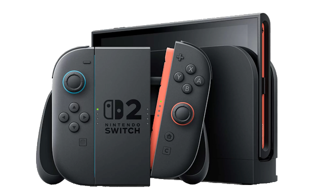